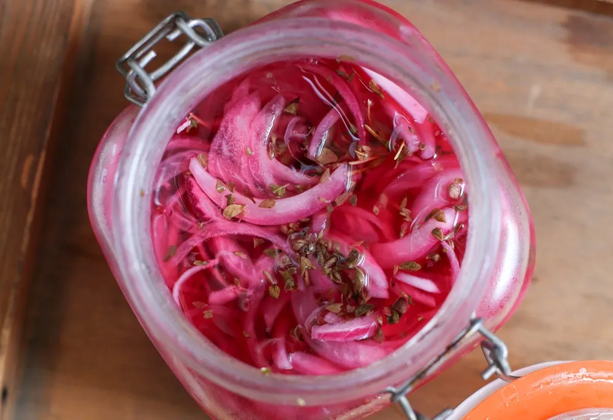

Página principal
Ingredientes
Pasos
Contacto
Atrás
Tacos de camarón estilo Ensenada
Cebolletas encurtidas

- 100gr Cebolleta cortada en juliana
- 80ml Vinagre
- Sal
-Mezclar todo y dejar encurtir al menos un par de horas y preferiblemente toda una noche.